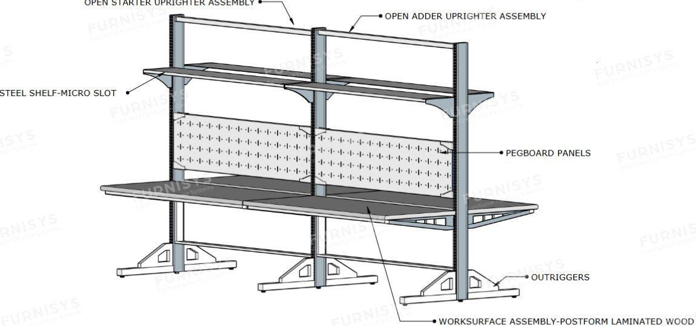

- Industry
- Manufacturing (embedded hardware and electronic modules)
- Application area
- Repair and maintenance
- Furnisys systems
- Flexi Workstation
- Engagement
- Product configuration and after-sales service
Boards for IoT, robotics and automation
Situation
The client designs and makes development boards, sensor modules, motor controllers and power management solutions. Their repair and maintenance team handles assembly, soldering, inspection, debugging and functional testing with bench instruments.
Not sure yet what the bench will need
The challenge
Repair work changes with product revisions and customer applications, so the client could not say exactly which accessories they would need over time. The workstation had to accept new or relocated accessories without rework, and provide equipment storage, vertical tool organisation and shelves.
How do you buy a workstation before you know its final shape?
The question
How do you start with what the team needs today and leave room to add accessories as the work becomes clearer?
A Flexi frame that takes accessories later
The Furnisys approach
- Flexi frame as the core, configurable in inline, back-to-back, X, C, T or L layouts now or later
- Postform laminated worktop for soldering, rework and inspection
- Pegboard for soldering accessories, hand tools, probes and cutters
- Adjustable steel shelf for PCB trays, test fixtures and boxed assemblies
- Double-sided setup: the same pegboard and shelves on front and back for use from both sides

Two operators, one frame
How the setup works together
Two technicians can work from opposite sides with identical tools and storage, or one can turn the bench to suit the task. New accessories mount on the same frame as needs become clear.
What the client received
What the configuration enabled
- A clean, organised electronics repair surface
- Matching tool and storage access from both sides
- Room to add or move accessories without rework
- A layout that can grow into other Flexi configurations
Configure gradually
Furnisys perspective
Not every client knows the full requirement on day one. A modular frame lets them begin simply and add accessories as their process settles.
Frequently asked questions
Can I add accessories to a Flexi Workstation later?
Yes. Accessories, storage and utilities can be mounted, moved or added on the Flexi frame at any time.
What is a double-sided electronics workstation?
A workstation with the same pegboards and shelves on both faces, so it can be used from either side.
Which layouts can a Flexi Workstation form?
Inline, back-to-back, X, C, T and L layouts.